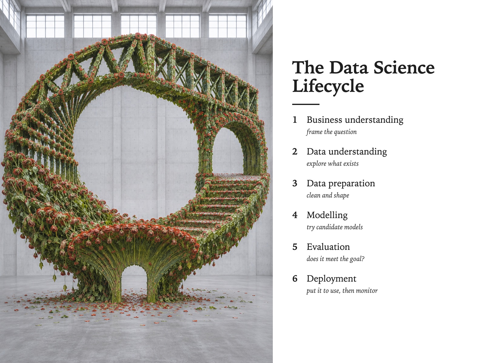

Style Vault / Gallery / Florist Is An Engineer
Florist Is An Engineer
SV-069

Example: The data science lifecycle, set in Florist Is An Engineer
In plain words
Living plants and flowers arranged into strict engineering shapes - a spiral, an arch, a bridge truss, a staircase - standing in an empty room in plain daylight, with some stems already wilting. It feels precise and beautiful, with a quiet sadness because it will not last. What makes it this style is a perishable material holding a permanent geometry, and slowly losing. Best for: structure versus organic culture; systems that need maintenance; design thinking workshops; gallery pieces on impermanence. Avoid: text or lettering generated inside the image.
Topics it fits
- Structure versus organic cultureplants forced into a severe plan show the tension between process design and the people inside it
- Systems that need maintenancevisible wilting on a perfect form makes the cost of not maintaining a pipeline easy to feel
- Design thinking workshopsliving material in an engineering shape invites a talk about how form and material shape each other
- Gallery pieces on impermanencea severe plan in an empty room gives one strong, calm image with a built-in clock
Art style and layout
- core locked [plan_is_severe, plants_stay_individual, flat_daylight, empty_room, decay_is_visible]
- the tension a perishable material holding a permanent geometry, and losing. It works only while
- plan is severe ask for
laid strictly to the engineering drawing, `machined edges and true - plants stay individual
packed shoulder to shoulder, `stems petals and leaf edges visible at the - flat daylight cool, overhead, from high windows. Never a spotlight and never golden hour -
- empty room bare concrete, nothing else in it. The hall must look like it was cleared for a
- decay is visible the fallen petals on the floor are not optional - they are the argument.
- palette [foliage "#3E5A2E to "#7FA05A, one flower hue e.g. "#C9432F or "#E8D24A, concrete
- negative space large and deliberate - the empty hall around the mass. This is the only card in
- era reference land art and monumental installation, crossed with architectural survey photography.
What must stay, what may change
composition - ten far-apart ENGINEERING FORMS built from the same living plant matter (a logarithmic spiral, a stepped ziggurat, a cantilevered arch, a truss bridge, a spiral staircase, a radio mast, a barrel vault, a helix, a cooling-tower hyperboloid, a dry-stone retaining wall). The plant matter, the room, the daylight and the scale never move - only the PLAN does. This is the vault's first composition-axis sheet; do not default it to subject
As JSON
Paste this into a prompt or a skill to reuse the style.
{
"id": "SV-069",
"name": "Florist Is An Engineer",
"audience": [
"gallery"
],
"category": [
"photography"
],
"format": [
"poster",
"illustration"
],
"maker": "diffusion",
"keep_and_swap": "**composition - ten far-apart ENGINEERING FORMS built from the same living plant matter** (a logarithmic spiral, a stepped ziggurat, a cantilevered arch, a truss bridge, a spiral staircase, a radio mast, a barrel vault, a helix, a cooling-tower hyperboloid, a dry-stone retaining wall). The plant matter, the room, the daylight and the scale never move - only the PLAN does. This is the vault's first composition-axis sheet; do not default it to subject",
"style_dna": {
"core_locked": "[plan_is_severe, plants_stay_individual, flat_daylight, empty_room, decay_is_visible]",
"the_tension": "a perishable material holding a permanent geometry, and losing. It works only while",
"plan_is_severe": "ask for `laid strictly to the engineering drawing`, `machined edges and true",
"plants_stay_individual": "`packed shoulder to shoulder`, `stems petals and leaf edges visible at the",
"flat_daylight": "cool, overhead, from high windows. **Never a spotlight and never golden hour** -",
"empty_room": "bare concrete, nothing else in it. The hall must look like it was cleared for a",
"decay_is_visible": "the fallen petals on the floor are **not optional** - they are the argument.",
"palette": "[foliage \"#3E5A2E to \"#7FA05A, one flower hue e.g. \"#C9432F or \"#E8D24A, concrete",
"negative_space": "large and deliberate - the empty hall around the mass. This is the only card in",
"era_reference": "land art and monumental installation, crossed with architectural survey photography."
},
"elements": {
"subject": "**a piece of engineering, built out of the wrong material.** The plan is the subject and the",
"composition": "one severe geometric mass, centred, occupying most of an otherwise empty hall. **The",
"light": "**flat cool overhead daylight, no spotlight, no warmth.** Gallery-spotlit flowers read as a",
"palette": "living greens and one or at most two flower hues, against bare grey-white concrete. **The",
"material/texture": "recognisably fresh, wet, individual plants - stems, petals and leaf edges visible at",
"mood": "monumental and quietly doomed. Enormous labour spent on something that will be compost in a week,",
"camera/render": "wide architectural photograph, straight on, eye level, everything in focus, no"
},
"palette_hex": [
"#3e5a2e",
"#7fa05a",
"#c9432f",
"#e8d24a"
],
"topics": [
{
"topic": "Structure versus organic culture",
"why": "plants forced into a severe plan show the tension between process design and the people inside it"
},
{
"topic": "Systems that need maintenance",
"why": "visible wilting on a perfect form makes the cost of not maintaining a pipeline easy to feel"
},
{
"topic": "Design thinking workshops",
"why": "living material in an engineering shape invites a talk about how form and material shape each other"
},
{
"topic": "Gallery pieces on impermanence",
"why": "a severe plan in an empty room gives one strong, calm image with a built-in clock"
}
]
}